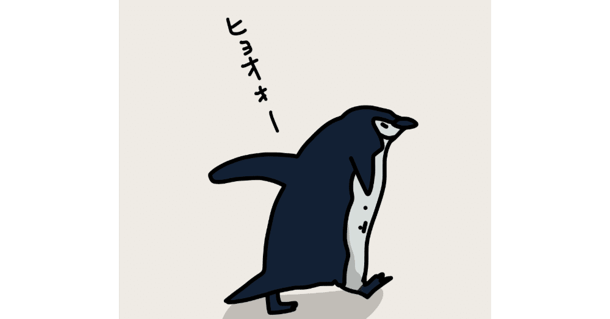

それは6月某日。
鬱陶しい蒸し暑さのなか会社に到着すると、デスクには「健康診断結果」と題された封筒が置いてあった。
それを見て、2週間ほど前に受診していたことを思い出す。「そういやあったな」と、そのままカバンに入れようとしたが、「まあ異常ないだろうけど、一応確認しておくか」と気楽な気持ちでその封を切った。
しかし、現実はいつも非情なものである。
そこに書かれていたのは総合判定F。11ある項目のうち、実に3つも引っかかっていた。
肝機能……軽度の所見を認めます。経過の観察および生活習慣の改善が必要です。
脂質代謝……異常所見を認めます。生活習慣の見直しや改善が必要です。
尿酸・痛風……軽度の所見を認めます。経過の観察および生活習慣の改善が必要です。
「う、うそやろ……」
周りの証言によると、どうやら僕は健診結果の紙を凝視しながらフリーズしていたらしく、仕事を頼みにきた上司を意図せず無視してしまっていたようだった。放心状態とは、まさにこのことである。
そういや、似たようなことがつい最近もあったなと思い返す。
それはいつも通っている散髪屋。もう13年ほど僕の髪を切ってくれている美容師の彼との話は楽しくてつい時間を忘れてしまうのだが、彼が表情を曇らせたかと思うと、「海人くん、実は悲報なんだけど」と口を開いた。
「ちょっとなんですか、藪から棒に～」
とおちゃらけて返すと
「白髪増えてるよね。最近大丈夫？」
と心配してくれていたのだ。以前より白い髪が数本増えたことは自分でも把握していたので、彼の優しさに胸を打たれつつ、
「そうなんですよ。ちょっと不摂生がたたっているのかなぁ」
と苦笑いしながら答えると「それとさ」とまだ言い淀んでいる。
「多分自然治癒するとは思うんだけど、10円ハゲが2か所あるんだよね」
鏡越しの彼と数秒目を合わせたまま、気づかぬ間に僕はあんぐりと口を開けたままだったようだ。その後のことはあまりよく覚えていない。
ということで、運動と食生活を本格的に見直さないと体が完全に壊れるのも時間の問題だと思い、僕はある決断をした。
来年の1月にハーフマラソンに出る！！！
この文章を書いている時点で、すでに出場料を払いエントリーは完了している。
ちなみに、せっかく21kmも走るのだから景色も楽しみたいと思い、海沿いのコースが用意された大会にエントリーしたのだった。
そして、走る苦楽を分かち合える仲間もほしいなと考え、このnoteではおなじみ(？)のキャンプ仲間でもある、通称:相棒(偶然だが、彼も最近かなり走り込んでいたらしかったのでちょうどよかった)を誘って出場することになった。
そう、僕はこうした明確な目標がないと、どうしてもやる気が起きないのだ。
何事も自己管理をするのは難しい。現に自分の体さえ満足に扱えていない僕は、いくら数値が悪くても健康診断の結果ひとつで全てを変えられるとは微塵も思っていなかった。
だから、何かを達成するためにまずは目標を作る！ 単純明快だが、僕にはそうするほかなかったのだ。
実はハーフマラソン自体は、6年前の春に一度走った経験がある。
大学4年の3月下旬。あと数日で社会の荒波に投身しなければいけない憂鬱さはあったものの、幼稚園からの幼馴染たちと出場したあの大会は、恐らく生涯忘れないだろう。
結果はなんとか完走できたものの、タイムは制限時間ギリギリの2時間ちょっとだった。
当時は走り切ることが目標だったが、今回は完走は大前提として、タイムは2時間を切ってみたいと密かに思っている。
ということで、近所にある大きめの都立公園に400ｍトラックがあることを嗅ぎつけた僕は、夏の陽ざしを避けられる時間帯に夜な夜な走っているというわけだ。
そうして、走るのを習慣にしてから約2週間が経過した今強く感じているのは、「走るのって、こんなに気持ちよかったっけ？」。これに尽きる。
「あれっ！？ 体の老廃物だけじゃなく、心の老廃物までもデトックスされとる！」
走り終えた後の帰り道、僕は気持ちのいい汗をかきながらいつもそう思う。身も心も軽くなって、以前より長い距離を走れたりタイムを縮めたりできると自信にもなる。
ランニングには筋力アップや脂肪燃焼はもちろん、免疫力や骨密度を高めたり等の身体的効果があり、ほかにもストレス軽減、認知機能の向上、セロトニンやドーパミンの分泌促進等の精神面へのプラス効果も科学的に証明されているようだ。
なんでもっと早く再開しなかったんや！
過去を悔いても仕方ないのはわかっているが、「忙しいから」だとか「時間がもったいない」だとか言い訳していた自分が、もはや恥ずかしい。
「まず第一に自分のために走れ！」以前の僕に会えるのなら、ぜひそう言ってやりたい。
それに、お気に入りの音楽をワイヤレスイヤホンで流しながら黙々と走るのは、ある種の瞑想に近い。
体は絶えず動いているが頭の中は空っぽでもいいのでボーとできるし、何か考え事があるならばそれについてじっくり想いを巡らすのもいい。
机の前よりも自然にあふれた景色のなか体を動かしながらの方が、なんだか心地よく物事を考えられるような気さえしている。
こうした走る習慣にプラスして、栄養のあるバランスのいい食事をとるために、これまであまりしてこなかった自炊に悪戦苦闘しながらも取り組んでいる。
その苦労もあってか、体重はこれまではギリギリ普通体重の範囲内だったが、最近はすっと落ちてほぼ標準体重に戻っている。「なんて体が軽いんだ！」とここのところはそうした感動すら覚えているほどに。
そして、つい先日、会社の年下の同僚にこんなことを言われてしまった。
「海人さん、なんだか若返りました？ 前より顔色いいっていうか、元気になったような」
「えっ、ほんと！？ 嬉しいなぁ。でも、褒めても何も出ないぞぉ」
「あ、あははは……」
体だけ若返っても中身はそれなりにおじさんなのは、どんな風にアンチエイジングすればいいのだろう。できることなら、こちらも早めに対策を講じたいところである。